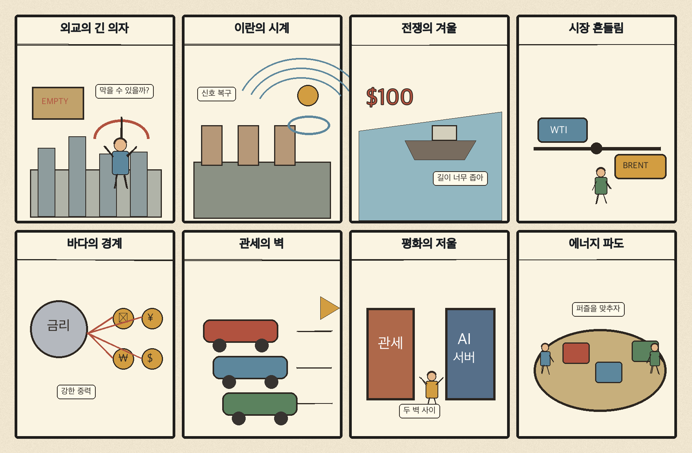
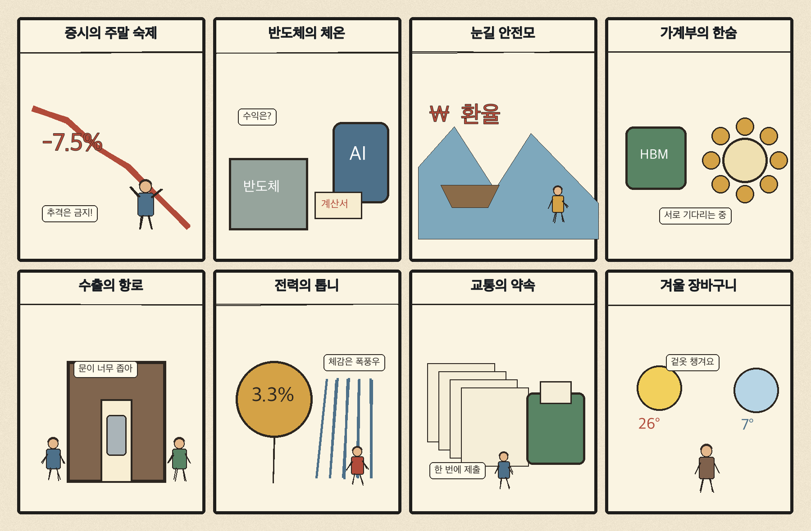

01
엔비디아 · 143.57→125.53달러 · -12.57%
내용요약 시가 대비 -12.57%로 조사군 최하위였습니다.
예상여파 회계조사 보도와 기술주 투매가 AI 반도체 전반의 위험 프리미엄을 높였습니다.
MORNING_BRIEFING_20261121
작성 시각: 2026-11-21 06:35 KST · 직전 미국 정규장과 2026-11-21 KST 당일 공개 기사 기준
11월 20일 뉴욕증시는 다우 -1.93%, S&P 500 -3.70%, 나스닥 -5.28%로 이틀 연속 급락했습니다. 엔비디아가 시가 대비 -12.57%, 브로드컴 -11.09%, 마이크론 -10.68%를 기록하며 AI 반도체 매도가 중심이었습니다. 전날 KOSPI도 -5.21%, KOSDAQ -5.71%로 무너진 만큼 다음 거래일에는 반등 추격보다 변동성 안정과 외국인 수급 확인이 우선입니다.
| 지수 | 종가 | 등락률 | 한국 증시 시사점 |
|---|---|---|---|
| 다우존스 | 48,147.33 | -1.93% | 경기·금융 심리 위축 |
| S&P 500 | 6,910.39 | -3.70% | 위험회피 확대 |
| 나스닥 종합 | 22,617.73 | -5.28% | 기술주 변동성 경계 |
AI·반도체 중심의 강한 위험회피가 이어졌습니다.
4,869.96으로 내려오며 시가 대비로도 약세였습니다.
회계조사 보도와 기술주 매도가 겹쳤습니다.
한국장은 휴장으로 다음 거래일 갭 위험을 점검합니다.
11월 20일 보고서는 점수·확률·손익비와 30건 이상 유사 조건 표본을 모두 검증한 후보가 없어 공식 추천을 내지 않았습니다. 사후 종목을 추가하지 않습니다.
| 시장 | 종가 | 등락률 | 기준 |
|---|---|---|---|
| KOSPI | 4,869.96 | -5.21% | 11월 20일 · 시가 대비 -1.19% |
| KOSDAQ | 645.68 | -5.71% | 11월 20일 · 시가 대비 -2.31% |
| 다우존스 | 48,147.33 | -1.93% | 미국 11월 20일 정규장 |
| S&P 500 | 6,910.39 | -3.70% | 미국 11월 20일 정규장 |
| 나스닥 종합 | 22,617.73 | -5.28% | 미국 11월 20일 정규장 |
셰브론 +0.93%, 엑슨모빌 +0.73%로 방어했습니다.
월마트가 시가 대비 +0.52%로 상승했습니다.
엔비디아 -12.57%, 브로드컴 -11.09%, 마이크론 -10.68%였습니다.
마이크로스트래티지 -10.01%, 로켓랩 -8.70%로 밀렸습니다.
내용요약 시가 대비 -12.57%로 조사군 최하위였습니다.
예상여파 회계조사 보도와 기술주 투매가 AI 반도체 전반의 위험 프리미엄을 높였습니다.
내용요약 시가 대비 -11.09%로 급락했습니다.
예상여파 AI 네트워크·맞춤형 반도체 투자 기대의 재평가가 국내 공급망 심리에도 부담입니다.
내용요약 시가 대비 -10.68% 하락했습니다.
예상여파 메모리와 HBM 관련주의 동반 약세 가능성을 높여 국내 반도체 수급에 직접적인 경계 신호입니다.
내용요약 시가 대비 -10.40%로 밀렸습니다.
예상여파 고밸류 반도체 설계주까지 매도가 확산되며 성장주의 할인율 부담이 커졌습니다.
내용요약 시가 대비 +0.93%로 조사군 최상위였습니다.
예상여파 급락장에서 에너지 대형주의 현금흐름 방어력이 상대적으로 부각됐습니다.
한국장은 토요일 휴장입니다. 다음 거래일에는 나스닥 -5.28%와 엔비디아·마이크론의 두 자릿수 급락이 국내 HBM·반도체 대형주에 큰 갭 위험으로 이어질 수 있습니다. KOSPI가 이미 전날 -5.21% 하락한 만큼 단순 낙폭과대 반등을 추격하지 말고 원달러 환율, 외국인 현·선물 수급, KOSPI 4,800선 방어와 변동성 축소를 먼저 확인해야 합니다.
오늘은 추천 없음 — 현금 관망
한국장이 휴장인 데다 미국 나스닥 -5.28%, AI 반도체 두 자릿수 급락, 전일 KOSPI -5.21%가 겹쳤습니다. 다음 거래일 당일 시가·실시간 수급과 30건 이상 유사 조건 표본을 확보할 수 없어 종합점수 75점·상승확률 60%·예상 손익비 1.5를 모두 검증한 후보가 없습니다.
관심 연결종목 에너지·필수소비재의 상대강세는 관찰 대상일 뿐 매수 추천이 아닙니다. 월요일 갭하락 뒤 기술적 반등도 추격매수를 금지합니다.
주말 이후 기술주 변동성의 진정 여부를 봅니다.
국내 HBM·반도체 대형주의 수급 전이를 점검합니다.
다음 거래일 저점 방어와 외국인 현·선물 흐름을 확인합니다.
해상운임과 에너지 가격의 위험 프리미엄을 살핍니다.
핵심 요약: 엔비디아 회계조사 보도와 중국 관련 칩 판매 논란이 AI 반도체 위험을 키웠습니다. 해외 데이터센터 과세 발언과 군사용 AI의 인간 개입 합의는 AI 인프라의 입지·안전 규칙이 동시에 강화되고 있음을 보여줍니다.
내용요약 미국 증권거래위원회가 엔비디아의 회계 처리와 싱가포르 매출 기준 변경을 들여다본다는 보도입니다.
예상여파 회계 투명성 논란은 AI칩 대표주의 밸류에이션과 반도체 공급망 전반의 투자심리를 더 위축시킬 수 있습니다.
내용요약 엔비디아가 중국 간첩 사건 연루 의혹을 받는 메가스피드 관련사에 칩 4만개 판매를 신청한 것으로 전해졌습니다.
예상여파 첨단칩 수출 통제와 고객 심사가 강화되면 중국 매출과 규제 비용의 불확실성이 커질 수 있습니다.
내용요약 트럼프 대통령이 미국 기업이 해외에 데이터센터를 건설하면 고율의 세금을 부과하겠다고 밝혔습니다.
예상여파 데이터센터 투자 입지와 전력·서버 공급망이 미국 중심으로 재편될 가능성이 있어 한국 기업의 해외 투자 계획에도 변수입니다.
내용요약 미·중 정상이 AI가 관여하는 군사적 결정에 인간의 개입을 유지한다는 데 합의했다고 미국 재무장관이 밝혔습니다.
예상여파 군사용 AI의 통제 원칙이 국제 규범 논의의 출발점이 되며 안전·감사 기술 수요를 키울 수 있습니다.
내용요약 AI가 응급실 도착 전에 협심증 위험을 경고해 환자 치료를 도운 사례가 소개됐습니다.
예상여파 의료 AI의 현장 효용이 확인될수록 임상 검증·책임 기준과 함께 응급의료 도입이 확대될 수 있습니다.
핵심 요약: 우크라이나 종전 협상에 짧은 시한이 제시됐지만 러시아 미사일의 폴란드 영공 침범 논란으로 유럽 안보 긴장은 높습니다. 기후총회와 홍해 항로, EU·영국 관계 재설정도 에너지·무역 질서에 영향을 줄 변수입니다.
내용요약 미국이 우크라이나 종전 협상을 내년 1월 초까지 타결하기를 원한다는 보도입니다.
예상여파 짧은 협상 시한은 휴전 기대를 높이는 동시에 우크라이나와 유럽의 안보 조건을 둘러싼 갈등을 키울 수 있습니다.
내용요약 폴란드가 러시아 미사일이 자국 영공을 넘어와 추락했다며 의도적 도발이라고 규정했습니다.
예상여파 북대서양조약기구 접경의 긴장이 높아져 유럽 방산·에너지 시장의 위험 프리미엄이 커질 수 있습니다.
내용요약 기후총회가 화석연료 관련 문구를 둘러싼 이견으로 공식 시한을 넘겨 주말 협상을 이어갑니다.
예상여파 합의가 약화되면 에너지 전환 투자 속도와 각국 규제 일정의 불확실성이 커질 수 있습니다.
내용요약 사우디 주도 연합군이 홍해의 후티 반군 무기 밀수 근거지를 타격했다고 밝혔습니다.
예상여파 홍해 항로 위험이 지속되면 선박 우회와 보험료 상승으로 해상운임 부담이 이어질 수 있습니다.
내용요약 영국과 유럽연합이 브렉시트 이후 관계 재설정을 위한 정상회담을 시작했습니다.
예상여파 무역·안보 협력이 복원되면 유럽 공급망의 마찰 비용이 줄 수 있지만 세부 합의까지는 시간이 필요합니다.

핵심 요약: 기름값 하락은 가계 부담을 덜지만 증시 급락과 12월 통화정책 불확실성이 금융시장에 남아 있습니다. 주말에는 전국 분양 일정, 철도망 기대 지역의 과열 경고, 영하권 추위와 눈길 안전을 함께 점검해야 합니다.
내용요약 전국 주유소 기름값이 27주 연속 하락했고 서울 평균 휘발유 가격도 1천800원대로 내려왔습니다.
예상여파 운송비와 가계 연료비 부담 완화에 도움이 되지만 국제유가와 환율 반등 여부는 계속 살펴야 합니다.
내용요약 다음 주 서울 경희궁 에피트 등을 포함해 전국에서 6천295가구가 분양될 예정입니다.
예상여파 분양 물량 확대는 청약 수요를 시험하며 금리·입지에 따른 지역별 양극화를 드러낼 수 있습니다.
내용요약 국가 철도망 발표를 앞두고 교통 호재 지역의 기대가 커지는 가운데 단순 호재 추격을 경계하는 분석이 나왔습니다.
예상여파 확정 노선과 사업성 검증 전의 가격 급등은 실수요자에게 손실 위험을 키울 수 있습니다.
내용요약 국내 증시가 11월 급락 이후 12월 미국 연방공개시장위원회를 변곡점으로 맞을 수 있다는 시장 분석입니다.
예상여파 금리 경로가 불투명한 동안 반도체·성장주의 변동성이 지속돼 현금 비중과 분할 대응이 중요합니다.
내용요약 전국이 대체로 맑지만 아침 기온이 영하권으로 떨어지고 충남·전라에는 비나 눈이 예보됐습니다.
예상여파 도로 결빙과 농축산물 냉해, 주말 이동 차질에 대비한 안전 관리가 필요합니다.
